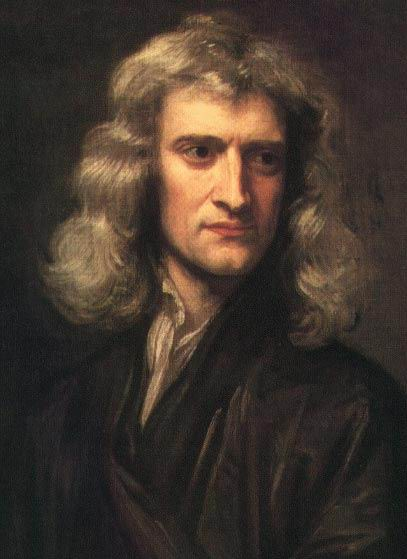

Isaac Newton
1643 – 1727

“To myself I am only a child playing on the beach, while vast oceans of truth lie undiscovered before me.”
Newton was an English physicist, mathematician, astronomer, natural philosopher, alchemist, theologian and one of the most influential men in human history. His Philosophiæ Naturalis Principia Mathematica, published in 1687, is considered to be the most influential book in the history of science.
Read more ..